| time | saw | phase | planner | actions (with human reaction time) | notes | cost |
|---|
0:02.0
turn 1 |  |
tutorial
decider: tutorial 97%
clarity 98% |
sees: Tutorial overlay: HOLD LEFT / RIGHT TO DODGE, CATCH STARS, AVOID COMETS, rocket at bottom center, hand pointing right
progress: Initial screen |
0:03.6 hold Follow tutorial hint by holding on the right side to start and dodge right (+1643 ms) |
Space dodger. Hold left or right side of screen to steer rocket. Catch stars, avoid comets. 3 hearts. | 3.7s
$0.0055 |
0:04.7
turn 2 | 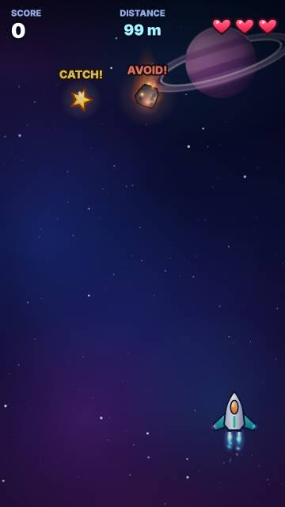 |
gameplay
decider: gameplay 70%
clarity 86%
last input worked: 98% |
sees: Rocket on bottom right; star on left, asteroid in middle falling down
progress: Hold moved rocket to the right
reflex policy (zone 450,0,880,1000): comet_above_go_left — a fiery asteroid is directly above the rocket and there is open space to the left of the rocket; comet_above_go_right — a fiery asteroid is directly above the rocket and there is open space to the right of the rocket; star_left — a yellow star is to the left of the rocket and no asteroid is in the way; star_right — a yellow star is to the right of the rocket and no asteroid is in the way
→ 13 checks, fired 3 (comet_above_go_left×2, comet_above_go_right×1), ended by duration |
0:05.9 hold reflex comet_above_go_left: a fiery asteroid is directly above the rocket and there is open space to the left of the r (+267 ms)
0:06.9 hold reflex comet_above_go_left: a fiery asteroid is directly above the rocket and there is open space to the left of the r (+400 ms)
0:07.7 hold reflex comet_above_go_right: a fiery asteroid is directly above the rocket and there is open space to the right of the (+224 ms) |
Space dodger. Hold left/right side of screen to steer rocket. Catch stars, avoid asteroids. 3 hearts. | 6.4s
$0.0098 |
0:08.3
turn 3 | 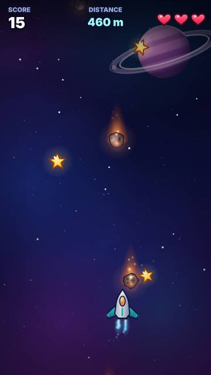 |
gameplay
decider: gameplay 77%
clarity 85%
last input worked: 74% |
sees: Gameplay: rocket at bottom, asteroid and star just above it, score 15, 460m, 3 hearts
progress: Reflex policy dodged asteroids and reached 460m with 3 hearts
reflex policy (zone 450,100,860,900): comet_above_go_left — a fiery asteroid is directly above or slightly right of the rocket and there is open space to the left; comet_above_go_right — a fiery asteroid is directly above or slightly left of the rocket and there is open space to the right; star_left — no asteroid is directly above the rocket and a yellow star is to the left of the rocket; star_right — no asteroid is directly above the rocket and a yellow star is to the right of the rocket
→ 5 checks, fired 3 (comet_above_go_left×3), ended by something_new |
0:08.4 hold reflex comet_above_go_left: a fiery asteroid is directly above or slightly right of the rocket and there is open space (+175 ms)
0:09.2 hold reflex comet_above_go_left: a fiery asteroid is directly above or slightly right of the rocket and there is open space (+213 ms)
0:10.0 hold reflex comet_above_go_left: a fiery asteroid is directly above or slightly right of the rocket and there is open space (+270 ms) |
Space dodger. Hold left/right side of screen to steer rocket. Catch stars, avoid asteroids. 3 hearts. Reflexes working well. | 6.3s
$0.0100 |
0:10.8
turn 4 | 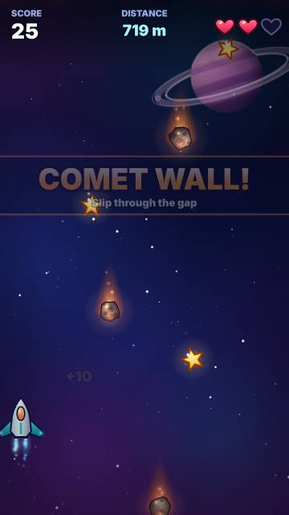 |
gameplay
decider: gameplay 61%
clarity 67%
last input worked: 69% |
sees: Gameplay with 'COMET WALL! Slip through the gap' banner, rocket at bottom left, 2 hearts left.
progress: Reached 719m, score 25. Comet wall event started.
reflex policy (zone 450,0,880,1000): comet_above_go_right — a fiery asteroid is directly above the rocket and there is open space to the right of the rocket; comet_above_go_left — a fiery asteroid is directly above the rocket and there is open space to the left of the rocket; star_left — no asteroid is directly above the rocket, and a yellow star is to the left of the rocket; star_right — no asteroid is directly above the rocket, and a yellow star is to the right of the rocket
→ 7 checks, fired 5 (comet_above_go_right×2, comet_above_go_left×1, star_right×2), ended by duration |
0:11.0 hold reflex comet_above_go_right: a fiery asteroid is directly above the rocket and there is open space to the right of the (+246 ms)
0:12.1 hold reflex comet_above_go_right: a fiery asteroid is directly above the rocket and there is open space to the right of the (+310 ms)
0:12.8 hold reflex comet_above_go_left: a fiery asteroid is directly above the rocket and there is open space to the left of the r (+150 ms)
0:13.6 hold reflex star_right: no asteroid is directly above the rocket, and a yellow star is to the right of the rocket (+198 ms)
0:14.3 hold reflex star_right: no asteroid is directly above the rocket, and a yellow star is to the right of the rocket (+206 ms) |
Space dodger. Hold left/right side of screen to steer rocket. Catch stars, avoid asteroids. 2/3 hearts. Comet wall event incoming. | 6.6s
$0.0106 |
0:14.8
turn 5 | 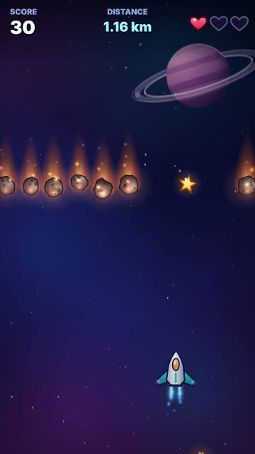 |
gameplay
decider: gameplay 89%
clarity 64%
last input worked: 57% |
sees: Space dodger gameplay, 1/3 hearts, score 30, comet wall with gap and star ahead of rocket
progress: Aligned with gap in comet wall, 1 heart left
reflex policy (zone 400,0,880,1000): comet_above_go_left — a fiery asteroid is directly above the rocket and there is open space to the left; comet_above_go_right — a fiery asteroid is directly above the rocket and there is open space to the right; star_left — no asteroid is directly above the rocket and a yellow star is to the left of the rocket; star_right — no asteroid is directly above the rocket and a yellow star is to the right of the rocket
→ 15 checks, fired 3 (star_right×1, star_left×2), ended by something_new |
0:15.1 hold reflex star_right: no asteroid is directly above the rocket and a yellow star is to the right of the rocket (+292 ms)
0:15.8 hold reflex star_left: no asteroid is directly above the rocket and a yellow star is to the left of the rocket (+213 ms)
0:17.6 hold reflex star_left: no asteroid is directly above the rocket and a yellow star is to the left of the rocket (+223 ms) |
Space dodger. Hold left/right side to steer. 1/3 hearts, score 30. Comet wall with gap at right-center. | 11.1s
$0.0098 |
0:18.2
turn 6 | 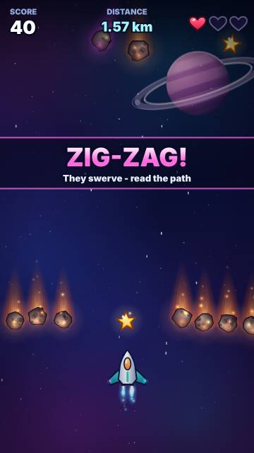 |
gameplay
decider: tutorial 79%
clarity 69%
last input worked: 92% |
sees: ZIG-ZAG! banner, rocket centered below a star, comet walls on sides
progress: Score increased to 40, distance 1.57 km, survived comet wall
reflex policy (zone 450,100,860,900): asteroid_above_go_left — an asteroid or comet is directly above the rocket and there is open space to the left of the rocket; asteroid_above_go_right — an asteroid or comet is directly above the rocket and there is open space to the right of the rocket; star_left — no asteroid is directly above the rocket, and a yellow star is to the left of the rocket; star_right — no asteroid is directly above the rocket, and a yellow star is to the right of the rocket
→ 9 checks, fired 4 (star_left×1, asteroid_above_go_right×1, star_right×1, asteroid_above_go_left×1), ended by duration |
0:18.6 hold reflex star_left: no asteroid is directly above the rocket, and a yellow star is to the left of the rocket (+256 ms)
0:19.3 hold reflex asteroid_above_go_right: an asteroid or comet is directly above the rocket and there is open space to the right of (+226 ms)
0:20.2 hold reflex star_right: no asteroid is directly above the rocket, and a yellow star is to the right of the rocket (+154 ms)
0:21.1 hold reflex asteroid_above_go_left: an asteroid or comet is directly above the rocket and there is open space to the left of t (+201 ms) |
Space dodger. Hold left/right side to steer. 1/3 hearts, score 40. ZIG-ZAG wave starting (swerving asteroids). | 6.5s
$0.0102 |
0:21.7
turn 7 | |
fail
decider: fail 95%
clarity 23%
last input worked: 7% |
sees: SHIP DOWN game over screen with Score 60 and 1.78 km
progress: Lost last heart and crashed at 1.78 km |
0:21.7 wait Wait for retry button or end card to appear |
Space dodger. Hold left/right side to steer. Crashed at 1.78 km, score 60. Waiting for retry or end card. | 3.3s
$0.0059 |
0:23.9
turn 8 | 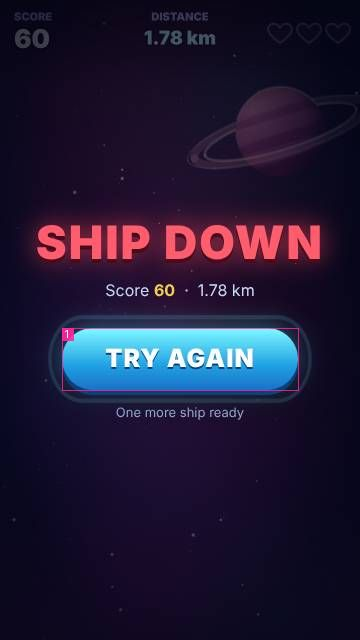 |
fail
decider: fail 98%
clarity 98%
last input worked: 99% |
sees: SHIP DOWN screen with TRY AGAIN button
progress: TRY AGAIN button appeared |
0:24.4 tap “TRY AGAIN” Tap TRY AGAIN to start another run (+453 ms) |
Space dodger. Hold left/right side to steer. Crashed at 1.78 km, score 60. Tapping TRY AGAIN for another run. | 7.9s
$0.0053 |
0:25.4
turn 9 | 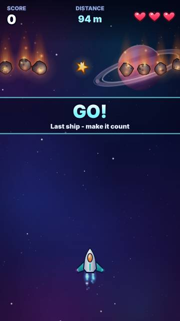 |
gameplay
decider: gameplay 83%
clarity 81%
last input worked: 100% |
sees: New run started: GO! Last ship - make it count, asteroids and a star at top
progress: TRY AGAIN worked, new run started
reflex policy (zone 450,0,860,1000): asteroid_above_go_right — an asteroid is directly above the rocket and there is open space to the right of the rocket; asteroid_above_go_left — an asteroid is directly above the rocket and there is open space to the left of the rocket; star_left — no asteroid is directly above the rocket, and a yellow star is to the left of the rocket; star_right — no asteroid is directly above the rocket, and a yellow star is to the right of the rocket
→ 15 checks, fired 4 (asteroid_above_go_left×1, star_right×2, asteroid_above_go_right×1), ended by something_new |
0:26.3 hold reflex asteroid_above_go_left: an asteroid is directly above the rocket and there is open space to the left of the rocket (+207 ms)
0:27.1 hold reflex star_right: no asteroid is directly above the rocket, and a yellow star is to the right of the rocket (+206 ms)
0:28.1 hold reflex asteroid_above_go_right: an asteroid is directly above the rocket and there is open space to the right of the rocke (+252 ms)
0:29.2 hold reflex star_right: no asteroid is directly above the rocket, and a yellow star is to the right of the rocket (+268 ms) |
Space dodger. Hold left/right side to steer. 3 hearts. Dodge asteroids, collect yellow stars. | 5.2s
$0.0084 |
0:29.8
turn 10 | 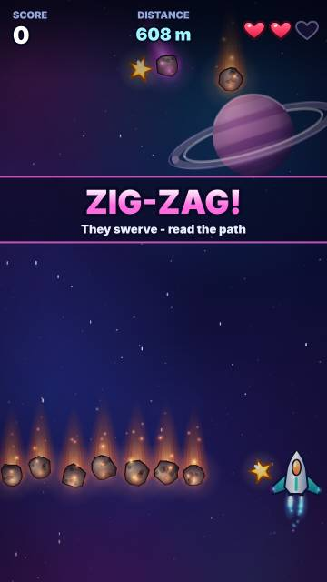 |
gameplay
decider: tutorial 53%
clarity 61%
last input worked: 62% |
sees: Gameplay at 608m, ZIG-ZAG! banner, rocket on bottom right, 2 hearts
progress: Survived 4.4s and reached 608m; ZIG-ZAG! swerving asteroids introduced
reflex policy (zone 450,0,880,1000): asteroid_above_go_left — an orange or purple asteroid is directly above the rocket and there is open space to the left of the rocket; asteroid_above_go_right — an orange or purple asteroid is directly above the rocket and there is open space to the right of the rocket; star_left — no asteroid is directly above the rocket, and a yellow star is to the left of the rocket; star_right — no asteroid is directly above the rocket, and a yellow star is to the right of the rocket
→ 10 checks, fired 5 (star_left×2, asteroid_above_go_left×1, asteroid_above_go_right×1, star_right×1), ended by duration |
0:30.0 hold reflex star_left: no asteroid is directly above the rocket, and a yellow star is to the left of the rocket (+232 ms)
0:30.8 hold reflex asteroid_above_go_left: an orange or purple asteroid is directly above the rocket and there is open space to the l (+150 ms)
0:31.8 hold reflex star_left: no asteroid is directly above the rocket, and a yellow star is to the left of the rocket (+231 ms)
0:32.7 hold reflex asteroid_above_go_right: an orange or purple asteroid is directly above the rocket and there is open space to the r (+168 ms)
0:33.4 hold reflex star_right: no asteroid is directly above the rocket, and a yellow star is to the right of the rocket (+187 ms) |
Space dodger. Hold left/right side to steer. 3 hearts. Dodge orange & purple swerving asteroids, collect yellow stars. | 6.9s
$0.0102 |
0:33.9
turn 11 | 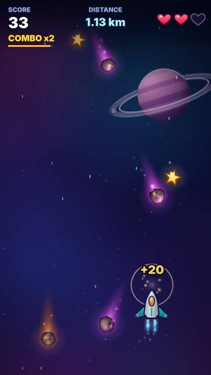 |
gameplay
decider: gameplay 89%
clarity 68%
last input worked: 95% |
sees: Space dodger gameplay, score 33, distance 1.13 km, 2 hearts, combo x2
progress: Reflexes dodged asteroids and collected stars, score up to 33
reflex policy (zone 450,0,880,1000): asteroid_above_go_left — an orange or purple asteroid is directly above the rocket and there is open space to the left; asteroid_above_go_right — an orange or purple asteroid is directly above the rocket and there is open space to the right; star_left — no asteroid is directly above the rocket, and a yellow star is to the left of the rocket; star_right — no asteroid is directly above the rocket, and a yellow star is to the right of the rocket
→ 5 checks, fired 3 (asteroid_above_go_left×1, star_right×1, star_left×1), ended by something_new |
0:34.2 hold reflex asteroid_above_go_left: an orange or purple asteroid is directly above the rocket and there is open space to the l (+238 ms)
0:35.0 hold reflex star_right: no asteroid is directly above the rocket, and a yellow star is to the right of the rocket (+205 ms)
0:36.1 hold reflex star_left: no asteroid is directly above the rocket, and a yellow star is to the left of the rocket (+229 ms) |
Space dodger. Hold left/right side to steer. 3 hearts. Dodge orange & purple swerving asteroids, collect yellow stars. | 5.8s
$0.0096 |
0:36.7
turn 12 | 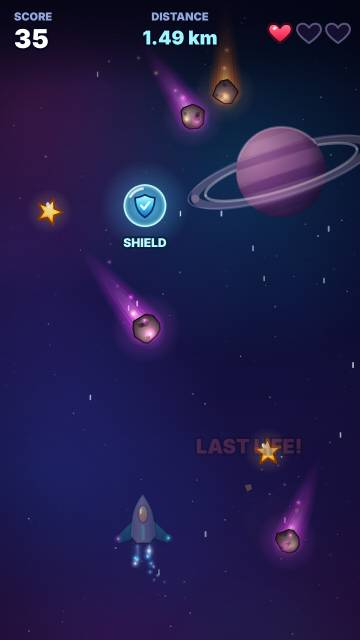 |
gameplay
decider: gameplay 90%
clarity 62%
last input worked: 55% |
sees: Space dodger gameplay, 1 heart left, shield power-up and asteroids incoming
progress: Reflexes dodged asteroids and collected stars; now 1 heart left and a shield appeared
reflex policy (zone 450,50,900,950): asteroid_above_go_right — an orange or purple asteroid is directly above the rocket and there is open space to the right; asteroid_above_go_left — an orange or purple asteroid is directly above the rocket and there is open space to the left; shield_left — no asteroid is directly above the rocket, and a blue shield power-up is to the left of the rocket; shield_right — no asteroid is directly above the rocket, and a blue shield power-up is to the right of the rocket; star_left — no asteroid is directly above the rocket, and a yellow star is to the left of the rocket
→ 5 checks, fired 3 (asteroid_above_go_right×1, asteroid_above_go_left×2), ended by interrupted |
0:36.9 hold reflex asteroid_above_go_right: an orange or purple asteroid is directly above the rocket and there is open space to the r (+150 ms)
0:37.9 hold reflex asteroid_above_go_left: an orange or purple asteroid is directly above the rocket and there is open space to the l (+229 ms)
0:38.7 hold reflex asteroid_above_go_left (late): an orange or purple asteroid is directly above the rocket and there is open space to the l (+239 ms) |
Space dodger. Hold left/right side to steer. 3 hearts (1 left). Dodge orange & purple asteroids, collect yellow stars and blue shield power-ups. | 5.8s
$0.0093 |
0:39.3
turn 13 | |
fail
decider: fail 88%
clarity 26%
last input worked: 18% |
sees: SHIP DOWN screen, Score 35, 1.72 km, Out of ships
progress: Lost last heart and crashed |
0:39.3 wait wait for retry or end card buttons to appear |
Space dodger. Hold left/right side to steer. 3 hearts. Dodge orange & purple asteroids, collect yellow stars and blue shield power-ups. Crashed at 1.72 km, Score 35. | 6.8s
$0.0057 |
0:41.5
turn 14 | 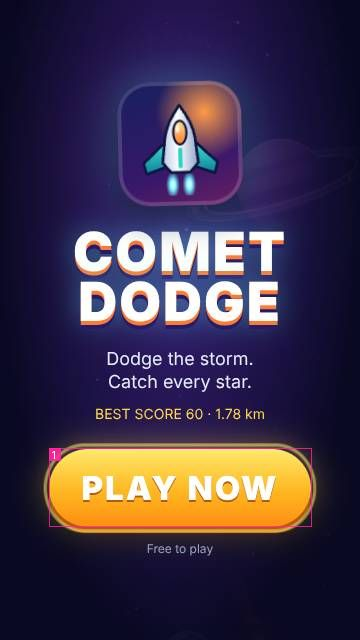 |
end_card
decider: title 61%
clarity 96%
last input worked: 43% |
sees: End card for Comet Dodge with PLAY NOW button
progress: Game transitioned from crash screen to end card |
0:44.3 tap “PLAY NOW” tap PLAY NOW on end card (+347 ms) |
Session complete. Reached end card. | 3.1s
$0.0053 |